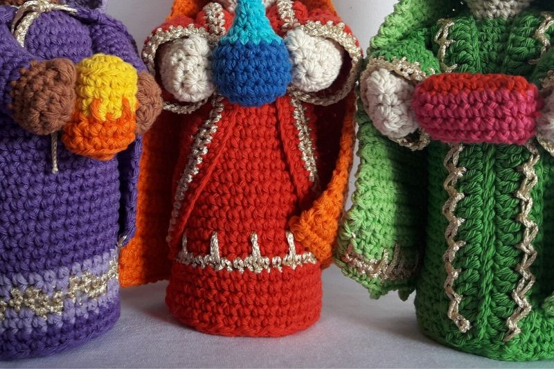
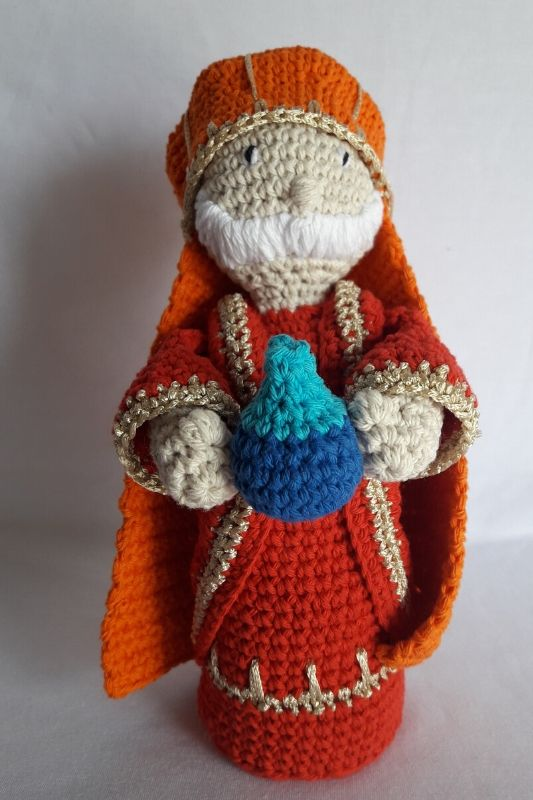
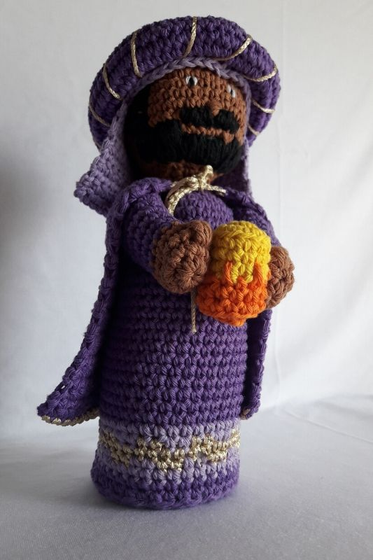
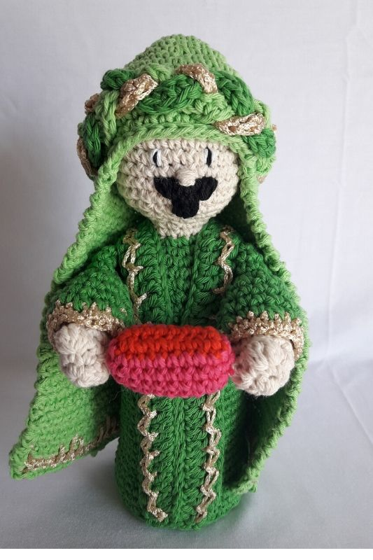

Tejido en común de los 3 reyes
Baltasar:
A.Cabeza de color marrón
B.cuerpo violeta
Gaspar:
A.Cabeza color piel o crudo
B. Cuerpo rojo
Melchor:
A.Cabeza color piel o crudo
B.cuerpo verde
Tapa Tunica (Base) color a elección
7. Anillo Mágico 6pb
8. 6aum 12pb
9. 1pb, 1aum 18pb
10. 2pb, 1aum 24pb
11. 3pb, 1aum 30pb
12. 4pb, 1aum 36pb.
Rellenar cuerpo, coser base , preferentemente colocar acetato para que quede parado.
GASPAR

Brazos x2
1. Anillo Mágico 6pb color A
2. 6aum 12pb (A)
3. Der.:2pb, 1popcorn (x4pa), 9pb B Izq: 9pb,1 popocorn (x4pa), 2pb.(A)
4. 12pb (A)
5. a la 12. 12pb Color B (Rellenar con vellón)
13. 6dism, cerrar y coser al cuerpo
BALTASAR

Rosca:
1. 45cadena, cerrar
2. 4pb, 1aum 54pb
3. 5pb, 1aum 63pb
4. y 5. 63pb
5. 5pb, 1dism 54pb
6. 4pb, 1dism 45pb. Cerrar con aguja de lana y rellenar con vellón. Envolver con hilo dorado,
Bordar barba, patillas, bigote, nariz y ojos.
MELCHOR

Estola
1. 60 cadenas +2 color verde
2. 27pb, 1aum, 4pb, 1aum y 27pb 62pb
3. 27pb, 1aum, 6pb, 1aum, 27pb 64pb.
Cerrar y bordar con aguja de crochet un punto enano en cada vuelta
Bordar nariz, ojos y bigote/chivita
Recomendaciones:
Como Jose y Maria, los Reyes no tienen por que ser tan altos, asi que teje una cuantas vueltas menos del cuerpo.
Y si vas a completar todo el Pesebre, toma nota de cuantas vueltas menos tejes. ;)
Materiales
Hilo de algodón color a eleccion
Aguja de Crochet N° 3
Aguja de coser Lana
Cintas, yute, lana gorda.
1 Rama, Vellon
bolitas de madera
Pegamento.
Abreviaturas
c:cadena
p: punto
p.enano: punto deslizado o razo.
Pb: punto bajo.
Pm: punto medio.
V o pa: vareta.
Pdv: punto doble vareta.
Aum: Aumento (2puntos en el mismo punto de base)
Dism: Disminucion (tomar 2puntos y cerrarlos juntos)
Cabeza Color A
1. Anillo Mágico 6pb
2. 6aum 12pb color
3. 1pb, 1aum 18pb
4. 2pb, 1aum 24pb
5. 3pb, 1aum 30pb
6. 4pb, 1aum 36pb
7. a 12 36pb
13. 4pb, 1dism 30pb
14. 3pb, 1dism 24pb
15. 2pb, 1dism 18pb.
Rellenar cabeza con vellón
16. 1pb, 1dism 12pb
17. y 18. 12pb Color
Cuerpo cambiar a Color B (Tunica)
19. 1pb, 1aum 18pb
20. 2pb, 1aum 24pb
21. 3pb, 1aum 30pb
22. 4pb, 1aum 36pb
23. a la 48. 36pb .Rellenar con buena cantidad de vellón el cuello para que quede firme.
Velo (Naranja)
1. Anillo Mágico 7pb
2. 7aum 14pb
3. 1pb, 1aum 21pb
4. 2pb, 1aum 28pb
5. 3pb, 1aum 35pb
6. 4pb, 1aum 42pb
7. 5pb, 1aum 49pb
8. y 9. 49pb
10. 11b, 1dism 45pb
11. 13pb, 1dism 42pb
12. 42pb
13. 19pb, 1dism 40pb
14. 40pb
15. 40pb dorado, cada 2pb 1pmedio
16. tejido recto, 21pb
17. 10pb, 1aum, 10pb 22pb
18. 22pb
19. 10pb, 2aum, 10pb 24pb
20. 24pb
21. 10pb, 1aum, 2pb,1aum, 10pb 26pb
22. 26pb
23. 10pb, 1aum, 4pb,1aum, 10pb 28pb
24. 28pb
25. 10pb, 1aum, 6pb,1aum, 10pb 30pb
26. 30pb
27. 10pb, 1aum, 8pb,1aum, 10pb 32pb
28. 32pb
29. 10pb, 1aum, 10pb,1aum, 10pb 34pb
30. 34pb
31. 10pb, 1aum, 12pb,1aum, 10pb 36pb
32. a la 45. 36pb cerrar.
Estola
1. 60 cadenas +2 color rojo
2. 27pb, 1aum, 4pb, 1aum y 27pb rojo
3. 27pb, 1aum, 6pb, 1aum, 27pb 62pb dorado
4. 27pb, 1aum, 8pb, 1aum, 27pb 64pb rojo. Cerrar y coser al cuerpo.
Bordar nariz, ojos y barba blanca
Brazos x2
1. Anillo Mágico 6pb color A
2. 6aum 12pb
3. Der:2pb, 1popcorn (x4pa), 6pb Izq: 6pb, 1popcorn (x4pa), 2pb
4. a la 9. 9pb rellenar con un poco de vellon
Mangas: 18cadenas color rosa
1. 18pb color rosa
2. 18pb color dorado
3. 1pb, 1aum color blanco 12pb
Capa
1. 52cadenas doradas
2. Dejar 15cadenas sin tejer, con color violeta 22pb y dejar 15cadenas
3. 3pb, 1aum 27pb
4. a la 21. 27pb violeta
22. 27pb dorado
Velo (Lila)
1. Anillo Mágico 7pb
2. 7aum 14pb
3. 1pb, 1aum 21pb
4. 2pb, 1aum 28pb
5. 3pb, 1aum 35pb
6. 4pb, 1aum 42pb
7. 42pb
8. a la 20. 24pb, 1cad tejido recto
21.24pb y dar una vuelta completa
Brazos x2
1. Anillo Mágico 6pb color A
2. 6aum 12pb
3. Der:2pb, 1popcorn (x4pa), 6pb Izq: 6pb, 1popcorn (x4pa), 2pb
4. a la 9. 9pb rellenar con un poco de vellon
Mangas: 18cadenas color rosa
1. 18pb color rosa
2. 18pb color dorado
3. 1pb, 1aum color blanco 12pb
Velo (verde manzana)
1. Anillo Mágico 7pb
2. 7aum 14pb
3. 1pb, 1aum 21pb
4. 21pb
5. 2pb, 1aum 28pb
6. 28pb
7. 3pb, 1aum 35pb
8. a la 10. 35pb
11. 8pb, 1aum 39pb
12. y 15. 39pb
16. tejido recto, 24pb
17. 10pb, 1aum, 10pb 22pb
18. 22pb
19. 10pb, 2aum, 10pb 24pb
20. 24pb
21. 10pb, 1aum, 2pb,1aum, 10pb 26pb
22. 26pb
23. 10pb, 1aum, 4pb,1aum, 10pb 28pb
24. 28pb
25. 10pb, 1aum, 6pb,1aum, 10pb 30pb
26. 30pb
27. 10pb, 1aum, 8pb,1aum, 10pb 32pb
28. 32pb
29. 10pb, 1aum, 10pb,1aum, 10pb 34pb
30. 34pb
31. 10pb, 1aum, 12pb,1aum, 10pb 36pb
32. a la 45. 36pb cerrar.